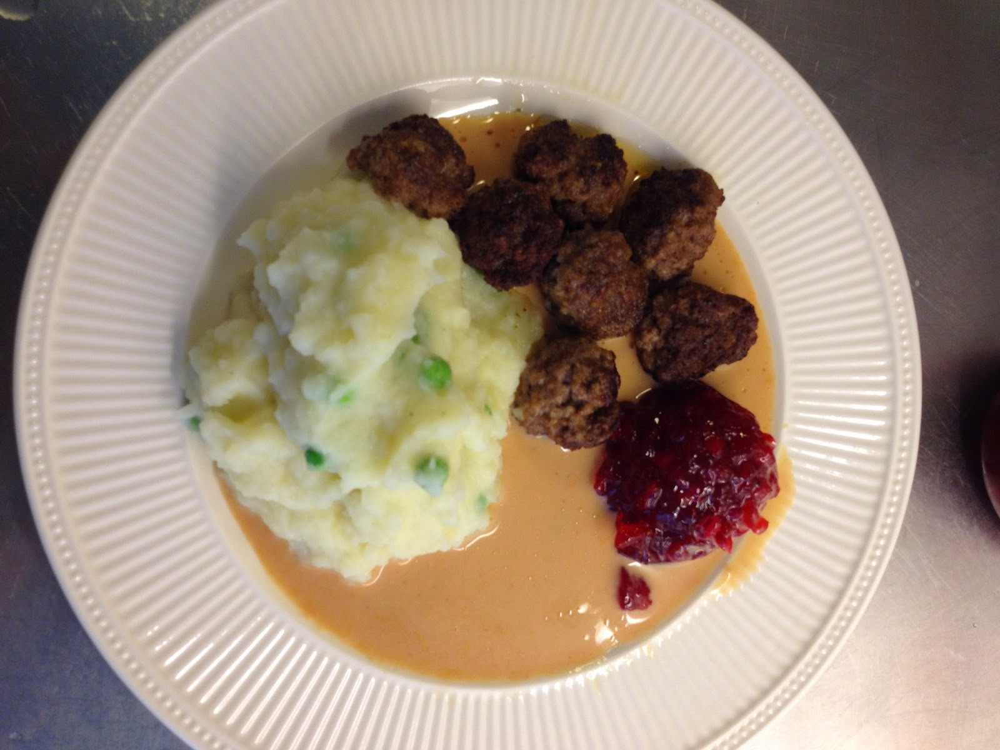

Mashed Potatos and Meatballs

Ingredients
Meatballs
- Mince
- Onion
- Bread Crumbs
- Milk
- Salt And Pepper
- Salt And Pepper
Mash
- Potatos
- Butter
- Milk
- Salt and Pepper
Brown Sause
- Beef stock
- Butter
- Flour
- Salt and Pepper
- Black currant Gel
- Cream
- optional soy sause
Description
Meatballs
- Turn on the oven at 150 deg centigrade
- Line Oven Tray with Parchment paper
- But breadcrumbs in larg bowl and add milk and season well with salt and pepper, let swell
- Grate the Onion
- Add mince and onion to the bowl
- Mix until everyting is incorporated
- Make balls and put them on the oven tray
- Put oven tray in oven and bake for 12 minutes
- Heat a frypan on medium-high heat
- Add butter and fry the meatballs to get color
Brown Sause
- In the pan where you fried the meatballs, add a bit more butter and some flour
- Add beef stock and simmer until thickened stiring occationaly
- Add cream
- Season with salt and pepper
- If sause looks a bit to pale, add a couple of dashes of soy sause
Mash
- In a pot boil pealed potatos in salted water
- Drain and mash the potatoes
- Melt butter and add milk into a separate pan to heat up
- Add milk and butter mixture a little at a time to potatoes until good texture